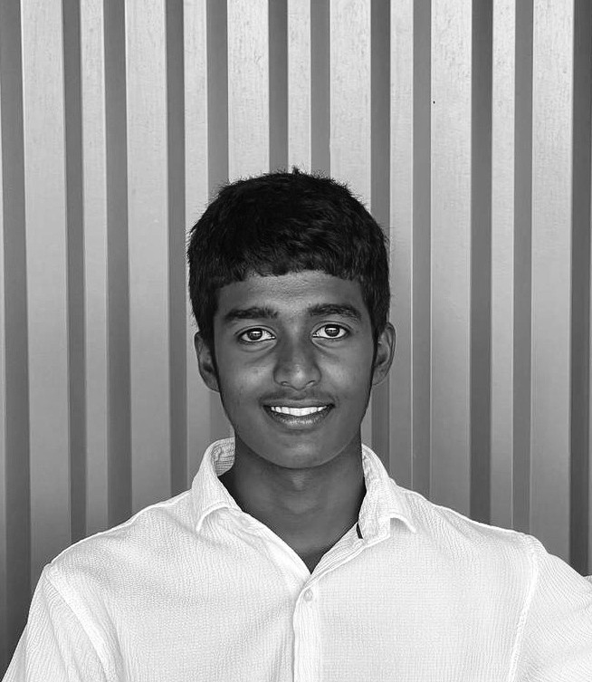

Visual creation.
Adobe Photoshop · Adobe Lightroom
Poster Design · Photo Editing · Social Media · Brand Visuals
THE DESIGNER BEHIND BLOOM
An independent graphic designer with a passion for turning ideas into visuals that feel clear, thoughtful and memorable.


CREATIVITY IN EVERY DETAIL MAKE ITA LITTLE ABOUT ME
I'm the creative mind behind BLOOM CREATIVES. I enjoy exploring ideas, building visual concepts and shaping designs that help people and brands communicate with confidence.
My creative work spans graphic design, brand visuals, social media content and promotional artwork for events. I also enjoy the storytelling side of creativity — bringing words, visuals and a clear message together.
For me, good design is more than making something look attractive. It's about understanding the idea, finding the right direction and giving it a visual voice.
MY CREATIVE FOCUS
From the first concept to the final visual, I focus on making creative work feel considered, consistent and connected to its purpose.
Adobe Photoshop · Adobe Lightroom
Poster Design · Photo Editing · Social Media · Brand Visuals
HTML · CSS · JavaScript · PHP
Web Design · Responsive Layouts · Front-end Basics
Creative Direction · Campaign Visuals · Event Promotion
Concept Development · Visual Storytelling · Event Design
EXPERIENCE
My experience comes from building brands, creating visual content and working on promotional ideas across creative and event-focused projects.
Chaen Clothing — developing a clothing brand's visual direction, identity and promotional content.
Vyntro Management — creating graphic design work and visual content for brand and client needs.
Enigma Entertainment — contributing to event concepts, promotional communication and creative planning.
THE WAY I SEE DESIGN